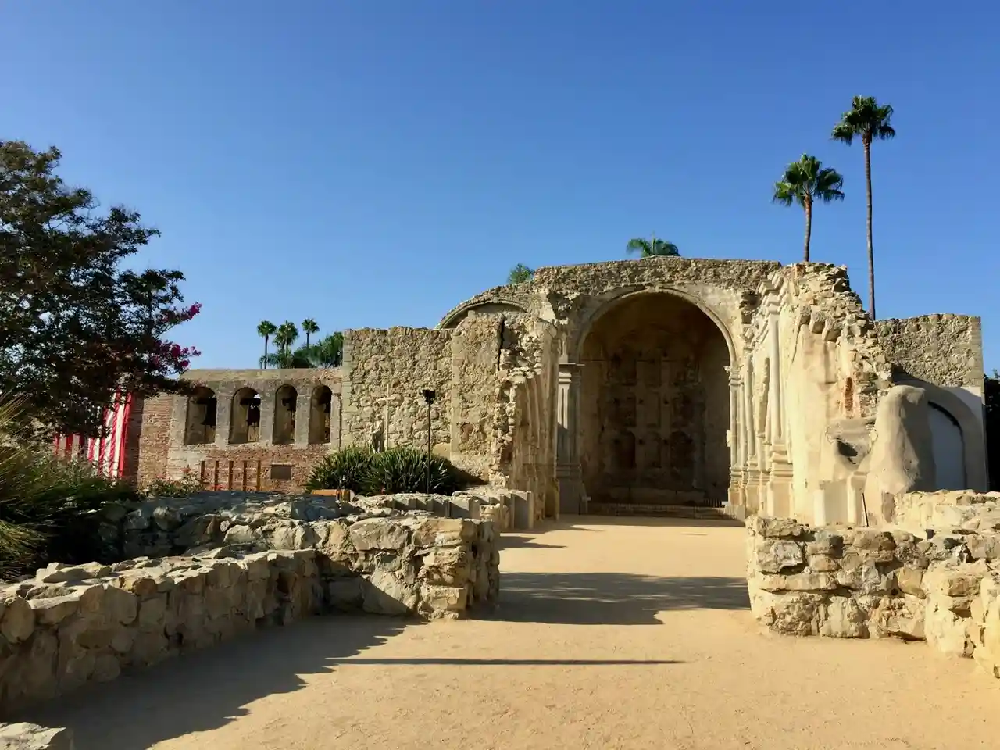
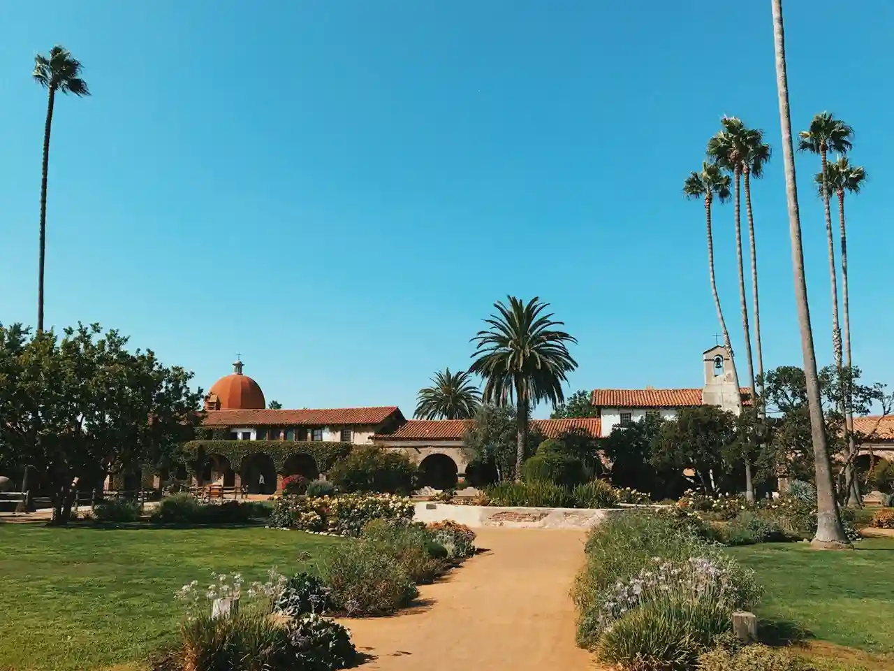
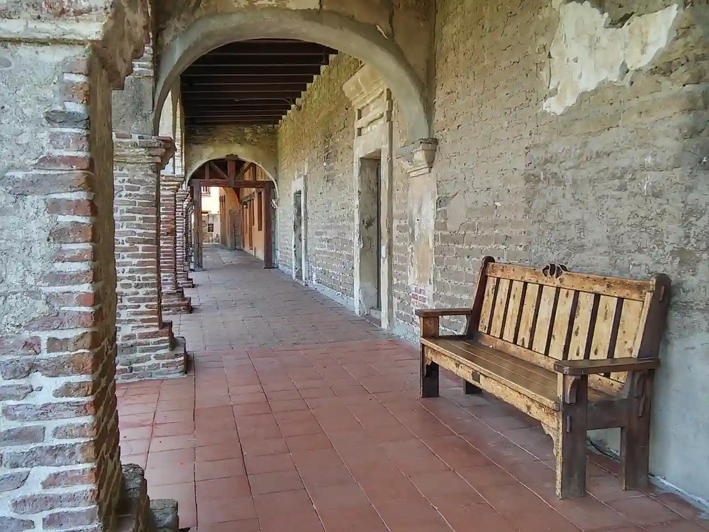
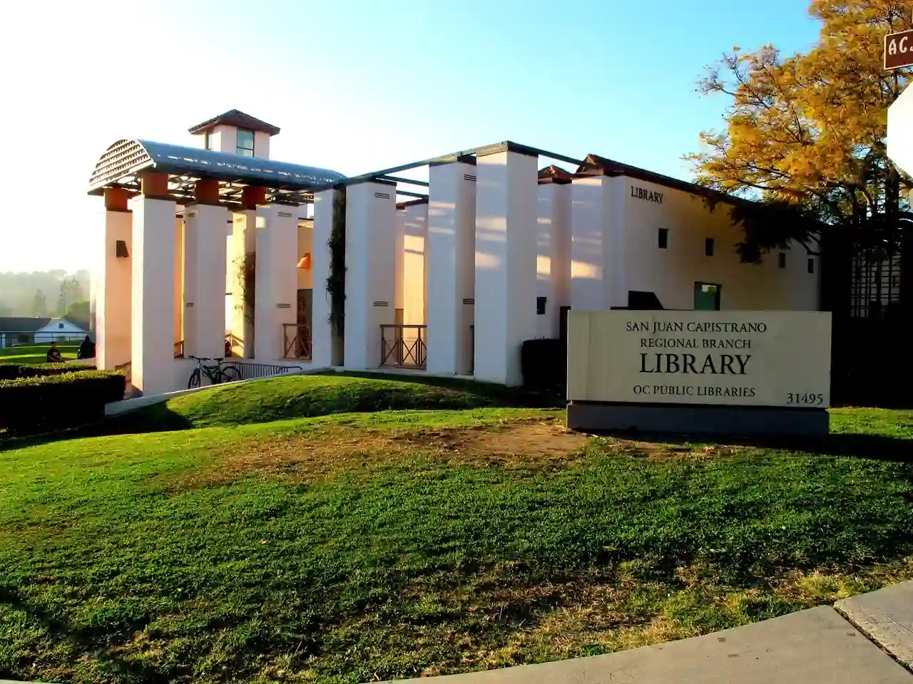
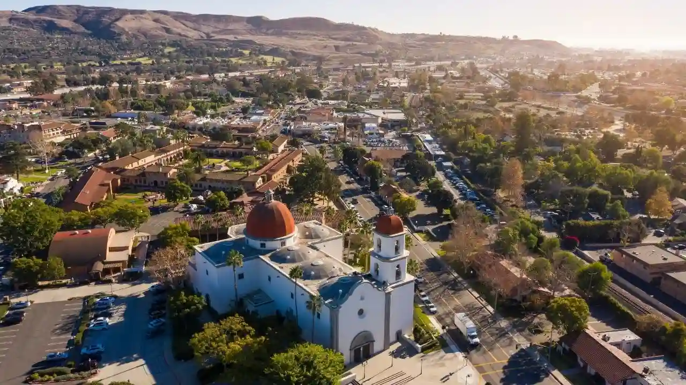
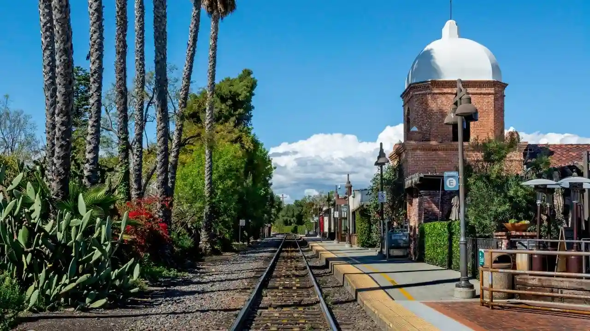

San Juan Capistrano was named after John of Capistrano (San Giovanni da Capestrano), a friar and Catholic priest who lived from the 14th to the 15th century. He was originally from the Italian town of Capestrano, Abruzzo.

"The Great Stone Church," which was badly damaged in the 1812 San Juan Capistrano earthquake.

Mission San Juan Capistrano, the most well-known landmark in the city.

One of the walkways in the mission.

The San Juan Capistrano library.

An aerial view of the city.

The railroad track on which Amway trains run up and down the coast.